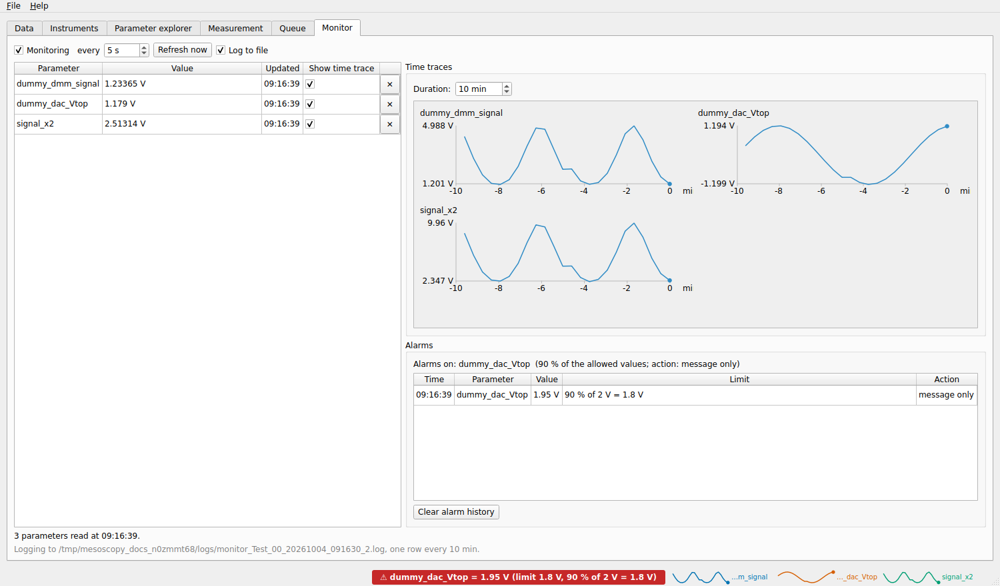

Monitor tab
The Monitor tab watches parameters over time: a temperature, a magnetic field, the current through a gate leak. It reads them regularly, shows their time traces, raises alarms when a value gets too close to its limits, and keeps a log file of the values on disk. It opens as soon as one parameter is monitored or has an alarm.


Three monitored parameters with their time traces. An alarm on the top gate has gone off (the red label in the status bar).
Choosing what to monitor
In the Parameter explorer, select a parameter (an instrument parameter or an experiment parameter) and click Monitor, or right-click it and choose Monitor. It is read at once and added to the table of the Monitor tab. To stop monitoring a parameter, click the ✕ at the end of its row, or right-click it and choose Remove from monitor.
The table
For each parameter, its value with the unit, the time it was updated, and a box Show time trace: tick it to draw the parameter in the Time traces box on the right (parameters whose value is not a number have no trace).
Reading
- Monitoring
Tick it to read the parameters periodically, every N s (from 1 s to 1 hour, 5 s by default). Refresh now reads them at once.
The parameters of different instruments are read at the same time, one after the other within an instrument. An instrument that is in use (a ramp, a user action) is skipped and read at the next tick.
While a measurement runs, the Monitor does not read the instruments itself: the measurement hands it the values, at most once per period, at the end of a point. The period can then not be shorter than a point. A message in the tab says so.
Time traces
The Time traces box draws the ticked parameters, two per row. Duration sets the time shown by every trace, from 1 minute to 24 hours (10 minutes by default; above an hour the time axis is in hours). The traces keep the readings of the last 24 hours, so you can widen the window afterwards.
The same traces, without axes, are drawn as small sparklines in the status bar, visible from every tab: hover over one for its last value and its range. Settings, Status bar chooses how many are shown (up to 12) and over what duration.
Alarms
An alarm watches a parameter against the limits it allows: the range of its validator, which is the safe limits of an experiment parameter, the limits given in the station file, or the range of the driver itself. A parameter without limits cannot have an alarm. In the Parameter explorer, right-click a parameter and choose Add alarm (Remove alarm to take it away). It goes off when the value reaches a percentage of the allowed range, 90 % by default: for limits of ±2 V it goes off at 1.8 V. If the limits are not symmetric, each side has its own threshold.
Settings, Alarms chooses the percentage and the action:
only show a message in the status bar;
pause the measurement (after the current point);
stop the measurement;
stop and ramp to 0.
Whatever the action, the alarm is shown in the status bar as a red label (click it to open this tab), listed in the
Alarms box of this tab for the session (Time, Parameter, Value, Limit, Action), and written to the log as a
WARNING. Clear alarm history empties the list; the log keeps the warnings. An alarm goes off once when the value crosses
the threshold, and again only after it came back inside.
During a measurement the alarms are checked at every point on the values the measurement just read or set; the other alarmed parameters are read about once a second.
The log file
Log to file (ticked by default) writes the monitored values to a file in the logs folder of the Data tab:
monitor_<database>_<yyyymmdd>.logFor example
monitor_Hall_bar_00_20261003.log.
It is a text file with tab-separated columns: the first is the time (2026-10-03 14:25:30) and there is one column for each
monitored parameter, in the order of the table. A row is written once per duration of the time traces (every 10 minutes
by default), from the readings the Monitor already has, so the log costs nothing. A parameter that has not been read yet is left
empty.
A new file is started whenever the database changes, a monitored parameter is added or removed, or the logs folder changes,
since the columns would no longer match. If a file of the same name and with the same columns already exists (you restarted the
program), the rows are added to it; if it has other columns, the new file gets the time in its name too
(monitor_Hall_bar_00_20261003_142530.log). Nothing is overwritten.
Without a logs folder, the file goes to QCoDeS’ default log folder. Nothing is written while Monitoring is unticked.